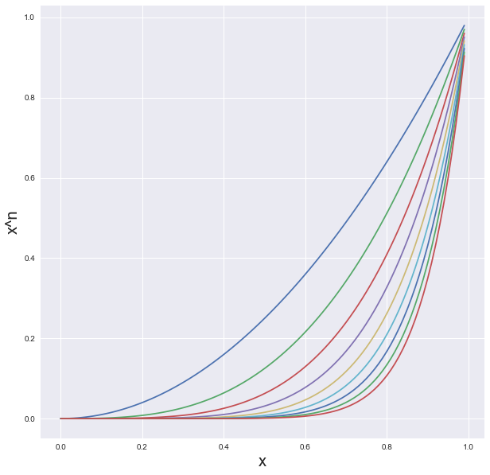
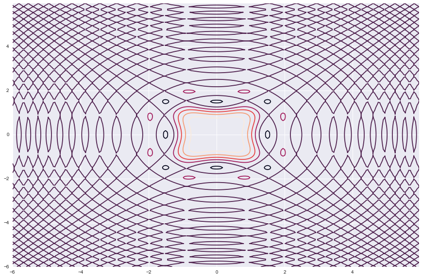
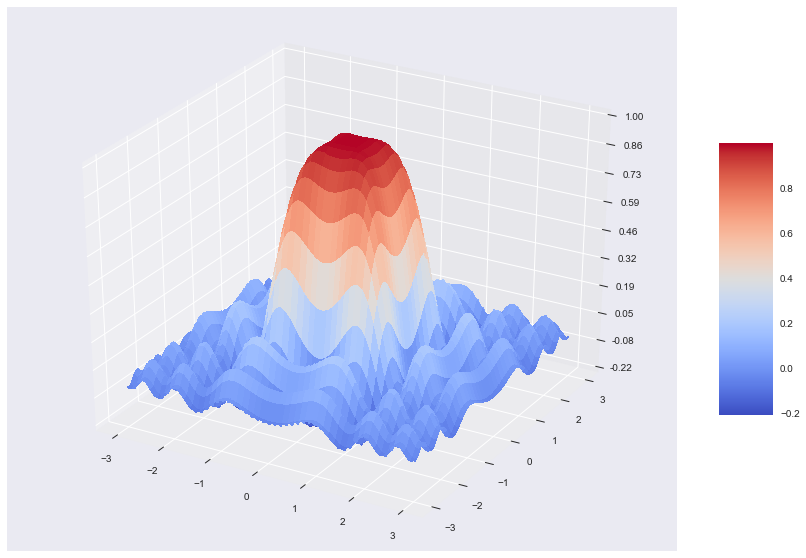
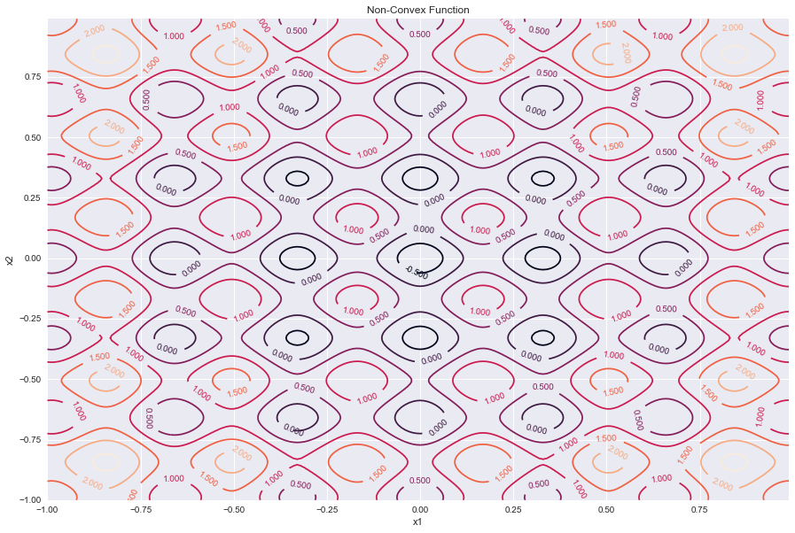
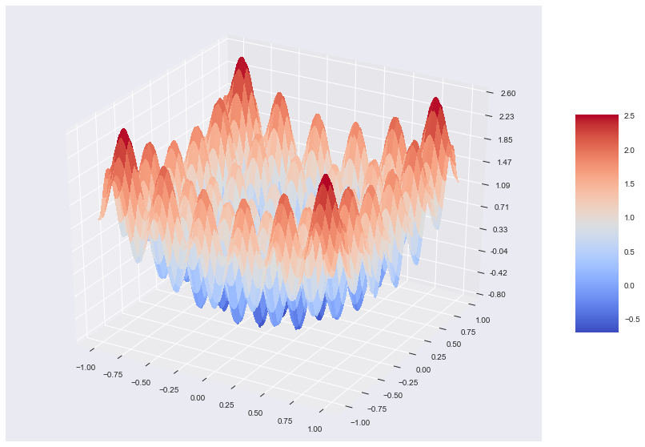

Numpy tutorial : arange,meshgrid
How to import Numpy library in python
import numpy as np
1. arange : How to generate integers from n1 to n2
X = np.arange(10) X
array([0, 1, 2, 3, 4, 5, 6, 7, 8, 9])
X*X
array([ 0, 1, 4, 9, 16, 25, 36, 49, 64, 81])
np.arange(3,12)
array([ 3, 4, 5, 6, 7, 8, 9, 10, 11])
np.arange(1,10,2)
array([1, 3, 5, 7, 9])
np.arange(10,11,0.01)
array([10. , 10.01, 10.02, 10.03, 10.04, 10.05, 10.06, 10.07, 10.08,
10.09, 10.1 , 10.11, 10.12, 10.13, 10.14, 10.15, 10.16, 10.17,
10.18, 10.19, 10.2 , 10.21, 10.22, 10.23, 10.24, 10.25, 10.26,
10.27, 10.28, 10.29, 10.3 , 10.31, 10.32, 10.33, 10.34, 10.35,
10.36, 10.37, 10.38, 10.39, 10.4 , 10.41, 10.42, 10.43, 10.44,
10.45, 10.46, 10.47, 10.48, 10.49, 10.5 , 10.51, 10.52, 10.53,
10.54, 10.55, 10.56, 10.57, 10.58, 10.59, 10.6 , 10.61, 10.62,
10.63, 10.64, 10.65, 10.66, 10.67, 10.68, 10.69, 10.7 , 10.71,
10.72, 10.73, 10.74, 10.75, 10.76, 10.77, 10.78, 10.79, 10.8 ,
10.81, 10.82, 10.83, 10.84, 10.85, 10.86, 10.87, 10.88, 10.89,
10.9 , 10.91, 10.92, 10.93, 10.94, 10.95, 10.96, 10.97, 10.98,
10.99])
1.1 Application
import matplotlib.pyplot as plt import seaborn as sns %matplotlib inline sns.set()
x = np.arange(0,1,0.01) plt.figure(figsize = [10,10]) plt.plot(x,x**2,\ x,x**3,\ x,x**4,\ x,x**5,\ x,x**6,\ x,x**7,\ x,x**8,\ x,x**9,\ x,x**10) plt.grid(True) plt.xlabel('x',fontsize =20) plt.ylabel('x^n',fontsize =20) plt.show()

Creating Numpy array
data_array = np.array([x,x**2,x**3,x**4,x**5,x**6,x**7,x**8,x**9,x**10])
data_array[0:5,0:5]
array([[0.000e+00, 1.000e-02, 2.000e-02, 3.000e-02, 4.000e-02],
[0.000e+00, 1.000e-04, 4.000e-04, 9.000e-04, 1.600e-03],
[0.000e+00, 1.000e-06, 8.000e-06, 2.700e-05, 6.400e-05],
[0.000e+00, 1.000e-08, 1.600e-07, 8.100e-07, 2.560e-06],
[0.000e+00, 1.000e-10, 3.200e-09, 2.430e-08, 1.024e-07]])
data_array.shape
(10, 100)
2. meshgrid : How to create a grid and it's application to ploting cost functions
x = np.arange(-6,6,0.05) y = np.arange(-6,6,0.05) grid = np.meshgrid(x,y)
1. Example Cost function
$\large{Z = \frac{sin(x^2+y^2).cos(x^2-y^2)}{x^2+y^2}}$
xx, yy = np.meshgrid(x, y, sparse=True) # <--------------------------------------------- z = np.sin(xx**2 + yy**2)*np.cos(xx**2 - yy**2) / (xx**2 + yy**2) plt.figure(figsize = [15,10]) h = plt.contour(x,y,z) # Label contours plt.clabel(CS, inline=1, fontsize=10)
<a list of 147 text.Text objects>

from mpl_toolkits.mplot3d import Axes3D import matplotlib.pyplot as plt from matplotlib import cm from matplotlib.ticker import LinearLocator, FormatStrFormatter import numpy as np fig = plt.figure(figsize = [15,10]) ax = fig.gca(projection='3d') # Make data. x = np.arange(-3, 3, 0.01) y = np.arange(-3, 3, 0.01) xx, yy = np.meshgrid(x, y) # <------------------------------- z = np.sin(xx**2 + yy**2)*np.cos(xx**2 - yy**2) / (xx**2 + yy**2) # Plot the surface. surf = ax.plot_surface(xx, yy, z, cmap=cm.coolwarm,linewidth=0, antialiased=False) # Customize the z axis. #ax.set_zlim(-1.01, 1.01) ax.zaxis.set_major_locator(LinearLocator(10)) ax.zaxis.set_major_formatter(FormatStrFormatter('%.02f')) # Add a color bar which maps values to colors. fig.colorbar(surf, shrink=0.5, aspect=5) plt.show()

Example 2: Simulated annealing
import math as math
$\large{Z = 0.2 + x^2 + y^2 -0.1 \cos(6 \pi x) - 0.1\cos(6 \pi y)}$
# Design variables at mesh points x = np.arange(-1.0, 1.0, 0.01) y = np.arange(-1.0, 1.0, 0.01) xx, yy = np.meshgrid(x, y) #<----------------------------- z = 0.2 + xx**2 + yy**2\ - 0.5*np.cos(6.0*math.pi*xx)\ - 0.5*np.cos(6.0*math.pi*yy) # Create a contour plot plt.figure(figsize =[15,10]) CS = plt.contour(xx, yy, z) # Label contours plt.clabel(CS, inline=1, fontsize=10) plt.title('Non-Convex Function') plt.xlabel('x1') plt.ylabel('x2')
Text(0,0.5,'x2')

from mpl_toolkits.mplot3d import Axes3D import matplotlib.pyplot as plt from matplotlib import cm from matplotlib.ticker import LinearLocator, FormatStrFormatter import numpy as np fig = plt.figure(figsize = [15,10]) ax = fig.gca(projection='3d') # Make data. x = np.arange(-1, 1, 0.01) y = np.arange(-1, 1, 0.01) xx, yy = np.meshgrid(x, y) # <------------------------------- z = 0.2 + xx**2 + yy**2\ - 0.5*np.cos(6.0*math.pi*xx)\ - 0.5*np.cos(6.0*math.pi*yy) # Plot the surface. surf = ax.plot_surface(xx, yy, z, cmap=cm.coolwarm,linewidth=0, antialiased=False) # Customize the z axis. #ax.set_zlim(-1.01, 1.01) ax.zaxis.set_major_locator(LinearLocator(10)) ax.zaxis.set_major_formatter(FormatStrFormatter('%.02f')) # Add a color bar which maps values to colors. fig.colorbar(surf, shrink=0.5, aspect=5) plt.show()
